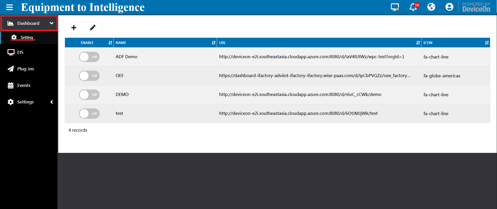

# E2I I.APP Server
With E2I_Server, users can swiftly utilize onboard devices, efficiently monitor device health status.
*Main function and feature of E2I I.APP product - by PM
# Installer
Run E2I_Server installer step by step:
Step 1.

Step 2. Select Installation Folder

Step 3.
Assign Public IP or DomainName for this E2I Server.

Enter “Public IP” or “Domain Name” for this physical/virtual machine and click “Next”. This information is required for “Edge Device” connectivity, please make sure your device is reachable under this IP or Domain Name.
For example, enter DomainName

Step 4. Assign HTTP Port Number you want.

You will need to configure the HTTP port number that is used for web browser-based access the DeviceOn management portal. The default port is 8080, but you can select any other port as long as it does not conflict with any other application or service.
Step 5.
Assign password for PostgreSQL Server.

Configure the password of the relational database (PostgreSQL) that E2I_Server uses to manage account, device, permission, and relation data. The default account name is “postgres” and the password should follow below guideline.
Strong Password Rules:
- Minimum eight characters, at least one number, one lowercase letter, one uppercase letter, and one special character (Blank character, Backslash(), Double quotes(") are prohibited)
Step 6.
Assign password for MongoDB Server.

Configure the password of the NoSQL database (MongoDB) that stores device sensor data. The default account and database is “wisepaas/WISE-PaaS”. This password should also follow strong password rules as outlined above.
Step 7.
Assign Maximum cache size for MongoDB Server

Select the database installation path and cache size of MongoDB and click “Next”. A larger cache size will result in better performance.
Step 8.
Assign password for administrator

Configure the password of the root account (dummy name “root@advantech.com.tw”) and click “Next”. This root account has the highest permission level and is used to log in to the E2I_Server web service and create other user accounts.
Step 9.
Assign Grafana Port Number.

Set up the HTTP service port for Grafana dashboard. The default user name and password is admin/admin. You will be able to modify this at the first login.
# Dashboard
# Description
You can create a new board by yourself. 
# Dashboard Setting
Click on the icon to add “Dashboard”.

# Borad Type
Device step 1 Choose “Device”
 step 2 Enter your Infomation, Url, Account and Password(Grafana)
step 2 Enter your Infomation, Url, Account and Password(Grafana)
 step 3 select the device and target sensor
step 3 select the device and target sensor
 step 4 confirm your setting
step 4 confirm your setting

Device Group step 1 Choose “Device Group”
 step 2 Enter your Infomation, Url, Account and Password(Grafana)
step 3 select the group and target sensor
step 2 Enter your Infomation, Url, Account and Password(Grafana)
step 3 select the group and target sensor
 step 4 confirm your setting
step 4 confirm your setting

Sample Template step 1 Choose “Sample Template”
 step 2 Enter your Infomation, Url, Account and Password(Grafana)
step 3 select the template
step 2 Enter your Infomation, Url, Account and Password(Grafana)
step 3 select the template
 step 4 confirm your setting
step 4 confirm your setting

Customize Url] step 1 Choose “Customize Url”
 step 2 Enter your Board Name,
step 2 Enter your Board Name,
 step 3 Enter your Customize Url
step 3 Enter your Customize Url

After setting

# EIS
# Description
After your device onboarding, you could view, edit device basic information, remote control, retrieve sensor data on your devices. Four tabs under Device menu, Device List contain device name, upgrade status, power management and etc. Device Monitoring to give device loading at present. To remote diagnostic and debug through Remote Control.

# -Device List
The device could be assigned to multiple accounts and device groups; therefore, you could leverage filter to find your device through Account, Device Group or Keyword.

Here is action bar for add, edit, search or export for below table devices.

Click the icon to add devices, that’s similar to device onboarding, download WISE-Agent, setup to your local device and grouping.


Click the edit icon to display “Delete” and “Edit” options on each device list.

You could edit device name, assign to different accounts, device groups in “Edit Device” 
If you would like to know a device be assigned to which account and device group, click search icon to enter Agent ID (from your WISE-Agent UI) to understand.


Click on export icon to export devices that in the table as CSV file.


Actually, you cloud do lots of remote action on the device.
- Device Status: Green light represent device connected, gray for disconnected and orange for device abnormal, due to device over threshold.
- Device Name: Device name, click name to get more deice information, such as platform, operation system, MAC, memory, etc.

- Upgrade: WISE-Agent upgrade icon, if there is new version released by Advantech, it will check and show the icon automatically.
- Power: Power On/Off, Restart, Sleep and hibernate, the actions depend on your device supported.
- Protection: Power-by McAfee white-list protection mechanism to solidify device system. After enable, 3rd execution file, bat, DLL cannot be launch. Please go to Setting -> Provision-> Protection to install first.
- Backup & Recovery: Power-by Acronis to backup/recovery device runtime system partition. Please go to Setting -> Provision-> Backup/Recovery to install first.
- Device Group Name: Device belong to which device groups.
- Wake-On-LAN: Wake-On-LAN mode for device, three mode to power your device up, “Direct Mode”, “Agent Mode” and “Repeater Mode”. The magic package sent by EIS-Cloud Server call “Direct Mode”, but cannot through different network. Therefore, to overcome this limitation, through another Agent or Router to send, forward magic packet. Please go to Setting -> Provision-> Power On to configure.
- Message: Device current status
# -Device Monitoring
On this page, you could get real-time information about the device that you selected. The information includes general PC status, such as network speed, software process, disk healthy, CPU and memory usage. If the device is Advantech industrial PC and SUSI driver supported, the RPM (Revolution(s) Per Minute) of CPU FAN, system, board level voltage, temperature is displayed on the page.
 Some of devices support multiple network cards, especial industrial PC. Click on the network button to retrieve others.
Some of devices support multiple network cards, especial industrial PC. Click on the network button to retrieve others.


- Name: Name of network card
- Description: network description
- State: Network connected or disconnected, for example, ethernet cable plugin or not.

- Link Speed (MBPS): Network maximum link speed om/gkp6lXi.png)
om/gkp6lXi.png) - Usage: Network current usage, Speed/Link Speed.
- Speed (MBPS): Send plus receive data rate.
Click on Software Process to show current user process list, if your device system not login, the result might be zero.
 Hover your mouse on the process list, you could restart or terminal it.
Hover your mouse on the process list, you could restart or terminal it.
 For hard drive status, not only include current Used Storage, but Healthy and Power on Time. The healthy is based on Acronis healthy model, that calculate on edge side, if you are interested, reference the official page.
For hard drive status, not only include current Used Storage, but Healthy and Power on Time. The healthy is based on Acronis healthy model, that calculate on edge side, if you are interested, reference the official page.
For hard drive status, not only include current Used Storage, but Healthy and Power on Time. The healthy is based on Acronis healthy model, that calculate on edge side, if you are interested, reference the official page.
For hard drive status, not only include current Used Storage, but Healthy and Power on Time. The healthy is based on Acronis healthy model, that calculate on edge side, if you are interested, reference the official page.

# -Remote Control
If you need to debug, diagnostic to your devices, actually, do not need go to field side. Through EIS-Cloud remote control to manage to reduce your operation effort. Basically, there are three functions (Screenshot, Terminal and Remote Desktop) for most devices.
 [Screenshot]
Through the Screenshot to get device real-time screen, there is a limitation, your device must login to operation system, otherwise, cannot capture screen and shown “No Login”
[Screenshot]
Through the Screenshot to get device real-time screen, there is a limitation, your device must login to operation system, otherwise, cannot capture screen and shown “No Login”
 [Terminal]
To terminal support any command to your devices, for instance, realize your device IP, traceroute the network or copy/view file on the device.
[Terminal]
To terminal support any command to your devices, for instance, realize your device IP, traceroute the network or copy/view file on the device.
 [Remote Desktop]
EIS-Cloud leverage VNC (Virtual Network Computing) technology to achieve remote desktop, to bridge different network between public and private. User do not need to install any program, App on their laptop or mobile devices. Through EIS-Cloud website to remote desktop to debug and diagnostic.
[Remote Desktop]
EIS-Cloud leverage VNC (Virtual Network Computing) technology to achieve remote desktop, to bridge different network between public and private. User do not need to install any program, App on their laptop or mobile devices. Through EIS-Cloud website to remote desktop to debug and diagnostic.

# Plugin
You could get real-time and historical data ,adjust data report interval or reset to default (60s) for basic sensors. And you could Config your plugin if it support the function of self-web.

# -Plugin List
Raw data of each plugin on devices, user could get real-time and historical data on this page. To data analysis and aggregation, user could adjust data report interval or reset to default (60s) for basic sensors.

# -Plugin Config

# Events
Include real-time “Action”, “Event Alert”, “Rule Engine”, “Notification” services. These setting are usually changed less often or only need to be modified once. Some functions require root, admin to modify or be visible, and product activation only shown on prefecture license, such as Standalone, Azure Kubernetes version.

# -Event Log
Device management is complex with device log and user behaver. Logging data can provide insights about your devices and help you:
- Troubleshoot past problems or prevent potential ones
- Improve device healthy or maintainability
- Real-time alert through 3rd notification
EIS-Cloud logs are categorized into the following types:
- Operation log provide information about EIS-Cloud resource CREATE, UPDATE and DELETE operation, like set device power off, update device name or delete account.
- Device log provide information about events raised as device side resources, like connected, disconnected, over the threshold,
- System log provide information about analyzed; scheduling event/alert that have been process on EIS-Cloud server. Example of this type are queue buffer alerts where server has processed and measured IoTHub queue and provides concise alerts.
There are three type of Event Logs as mentioned above and each event log with different severity, Information, Warning and Error. Through the filter to find your device log.
 Click on the icon to refresh event log by manual.
Click on the icon to refresh event log by manual.
 Click on export icon to export devices that in the table as CSV file.
Click on export icon to export devices that in the table as CSV file.

# -Event Alert
EIS provide Event Log that describe on Section 3.3.4, user could decide to what kind of event should be notified.

# -Notification
Here are five notification services, include tradition service (SMS, Email) and popular social media Purchase Information & Product Page 95(LINE, WeChat and WhatsApp), if you select the event type on “Event Alert”, the notify message will through these services. These notification services are global setting, if your account does not receive, please check the personal setting on Account -> Personal Alert Service.

# -Assign Action
The real-time actions on the overview that are defined, created on here, you could add a new action and pin to overview. These actions are binding to personal account, cannot view, edit, delete others.
 Click on the icon to add action.
Click on the icon to add action.
 Enter your description and select an “Action” from three categories, Power Saving, Security and System.
Enter your description and select an “Action” from three categories, Power Saving, Security and System.
 Select “Device Groups” for the action that you picked up.
Select “Device Groups” for the action that you picked up.
 To confirm information, action, group and devices, and enable pin on overview, please click on “Confirm” to complete the wizard.
To confirm information, action, group and devices, and enable pin on overview, please click on “Confirm” to complete the wizard.
 After created, you could find a new action on below actions list, click the PIN icon to determine the action shown on overview or not.
After created, you could find a new action on below actions list, click the PIN icon to determine the action shown on overview or not.
 The actions support scheduling, click on the icon to define a schedule, daily, weekly, monthly, yearly or once.
The actions support scheduling, click on the icon to define a schedule, daily, weekly, monthly, yearly or once.
 Enter to schedule list for all actions, and click on add icon to create new schedule.
Enter to schedule list for all actions, and click on add icon to create new schedule.

Given your schedule name, time zone, period and time and click Save.
- Schedule Name: Name of schedule
- Time Zone: Time zones tend to follow the boundaries of countries and their subdivisions instead of longitude, because it is convenient for areas in close commercial or other communication to keep the same time.
- Period: Repeat interval for Daily, Weekly, Monthly, Yearly or once at a time.
- Time: Execution time.
 Click on the edit icon to adjust schedule item.
Click on the edit icon to adjust schedule item.

# -RuleEngine
EIS provides the rule engine. Users can acquire anomaly situations by means of setting thresholds to those interested devices, and, once one or more thresholds meets, receive alerts via event notification services, another one indispensable feature for users.
 Click on the add icon to create a Rule.
Click on the add icon to create a Rule.
 Pick-up the sensor that you want to monitor, the steps are select Rule Type, Device Group and Device.
Pick-up the sensor that you want to monitor, the steps are select Rule Type, Device Group and Device.

 Define the threshold, provide 3 types, more than, less than and outside the range. Also, you could realize current value on the page.
Define the threshold, provide 3 types, more than, less than and outside the range. Also, you could realize current value on the page.
- Lasting Time (Second): means the sensor over the threshold and continue for a period time, avoid peak value to trigger.
- Notice Interval (Second): If over the threshold, the WISE-Agent will send a notify event, to avoid lots of message, user could adjust notice interval.
 Next, to define the action, if threshold reached. For example, you could power your device off, if the hard drive unhealthy.
Next, to define the action, if threshold reached. For example, you could power your device off, if the hard drive unhealthy.
 Confirm the rule setting and click confirm.
Confirm the rule setting and click confirm.
 The rule list shown as below, user could edit or disable through the switch.
The rule list shown as below, user could edit or disable through the switch.

# Settings
# Provision
For device provision, 3 types need be pre-configured. One is “Power On”, select which mode to enable device wake up. The others are 3rd party tool integration, Acronis to backup/recovery your device system and McAfee for white-list security protection. To install 3rd tools, you must purchase the license and activate the product.
 Click on the Setting for “Power On”.
Click on the Setting for “Power On”.
 To power your device up, you might to configure the mode for your device. The mechanism is based on Wake-on-LAN to send magic packet to your device. There is a limitation on “Direct Mode”, the EIS-Cloud server and edge device must be on the same network.
To power your device up, you might to configure the mode for your device. The mechanism is based on Wake-on-LAN to send magic packet to your device. There is a limitation on “Direct Mode”, the EIS-Cloud server and edge device must be on the same network.
 However, through the “Agent Mode” or “Repeater” could overcome the limitation. You need to pick-up a device that always on and on the same network with other devices.
However, through the “Agent Mode” or “Repeater” could overcome the limitation. You need to pick-up a device that always on and on the same network with other devices.
 For Repeater mode, not only enter your repeater IP, but set your repeater to allow port forwarding (uses UDP port 7 and 9) and permit the packet to be broadcast to the entire LAN.
For Repeater mode, not only enter your repeater IP, but set your repeater to allow port forwarding (uses UDP port 7 and 9) and permit the packet to be broadcast to the entire LAN.
 Click on the Install for “Acronis”.
Click on the Install for “Acronis”.
 Select the free space size to create Acronis Secure Zone (Hidden Partition) to backup system partition. The free space size must larger than system used.
Select the free space size to create Acronis Secure Zone (Hidden Partition) to backup system partition. The free space size must larger than system used.

Click on the Install for “McAfee”, and select device group to install.


# Account
The first step to manage device is login to EIS-Cloud, therefore, you could start to invite, edit other accounts on this page. There are 3 tabs on account management.

⚫ My Profile
On “My Profile”, shows your account information and personal alert service, such as LINE, WeChat token.
⚫ Management
Every account belongs to a role, you could use the filter to find account. There are 3 roles in the EIS-Cloud system. One is “Super Admin”, only one account in the system belongs to “Super Admin”. The other role is “Admin” and “Device Admin”.
 Click on the icon to “Add Account”
Click on the icon to “Add Account”

 Enter your account, role, password, etc. to create an account. If the user would to receive notify from device, system alert, please enable these alert services on “Mail”, “SMS”, “WeChat”, “LINE” and WhatsApp. These alert services are personal setting, please make sure the “Setting -> Notification” is configured, enabled on EIS-Cloud System.
Click on the icon to “Edit” or “Disable” account.
Enter your account, role, password, etc. to create an account. If the user would to receive notify from device, system alert, please enable these alert services on “Mail”, “SMS”, “WeChat”, “LINE” and WhatsApp. These alert services are personal setting, please make sure the “Setting -> Notification” is configured, enabled on EIS-Cloud System.
Click on the icon to “Edit” or “Disable” account.
 ⚫ Device Group
Every account could group their device into different groups to manage, for example, device over different floor on the building. User could create 1F, 2F group to easy management.
⚫ Device Group
Every account could group their device into different groups to manage, for example, device over different floor on the building. User could create 1F, 2F group to easy management.
 Click on the icon to add “Device Group”.
Click on the icon to add “Device Group”.


# OTA(Remote Provisioning)
OTA (Over-The-Air) is one of powerful feature EIS-Cloud provides. Users can deploy software packages, configuration, Windows QFE (Quick Fix Engineering), Advantech BIOS update onto a device remotely, or even many devices broadly.
https://drive.google.com/file/d/1so5GInp0FHwFXaeUf1uZE8olj18ptiXv/view?usp=sharing